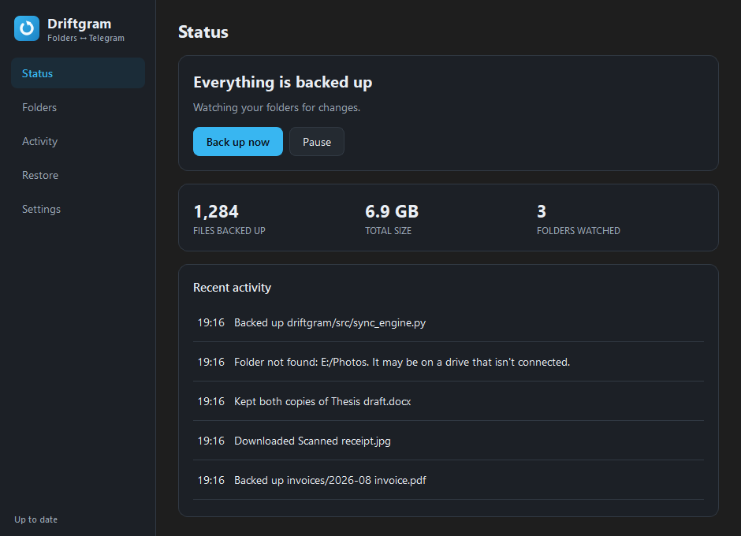

Free · Open source · Windows & Linux
Your folders, backed up to your own Telegram.
Driftgram is a desktop app that keeps the folders you choose in sync with a Telegram chat — both ways. Save a file on your PC and it appears in Telegram. Send one from your phone and it lands in the right folder. Nothing passes through anybody else’s server.
v1.0.0 · 27 MB installer · no account to create · MIT licensed

- Largest single file
- 2 GB
- Servers in between
- None
- One-time setup
- 5 min
- Cost, forever
- Free
In plain English
Three things, then you can forget about it
There is nothing to schedule and no button to remember to press. You set it up once and it runs in the background, showing a small icon in your system tray.
-
Step 1
Pick your folders
Point Driftgram at the folders that matter — documents, photos, a project directory. Anything you would hate to lose.
-
Step 2
It watches them for you
Save, edit or drop in a file and Driftgram sends it to your Telegram within seconds. Only what changed goes up.
-
Step 3
Reach them anywhere
They are ordinary Telegram messages, open on any device you are signed in on. Deleted something? Restore it from the app.
Under the hood
A two-way sync that doesn’t feed itself
Upload a file and Telegram hands it straight back as a new message. Naive tools download that, touch the local file, notice the change and upload it again — forever. Driftgram keeps a local record of the size, timestamp and hash of everything it has synced, and nothing moves unless the content actually differs.
You save a file in a watched folder. It isn’t in the manifest, so it goes up.
Every upload and download path checks this record before acting, and updates it before returning.
What you get
Details that decide whether you keep using it
Files come back intact
Everything is uploaded as a document, so Telegram never recompresses it. A photo returns exactly as it went up.
No 50 MB ceiling
Driftgram signs in as you rather than as a bot, so the limit is Telegram’s own — about 2 GB a file, or 4 GB with Premium.
Conflicts keep both copies
Edit offline while a newer copy arrives from your phone and yours stays put; Telegram’s is saved beside it as name (from Telegram).ext.
Restore what you deleted
Telegram still holds it. Browse everything ever backed up, tick what you want, and bring it back.
Skip what isn’t worth it
gitignore-style rules per folder and globally, with presets for build output, videos, disc images and logs.
Nothing phones home
Driftgram talks to Telegram and nothing else. No telemetry, no update check, no server belonging to anyone else.
The app
Six screens, no terminal
Built for people who have never opened one. There’s a command-line version too, for those who have. Shown here in dark mode — Driftgram follows whatever your system is set to.
Setup
Four steps, about five minutes
The wizard runs in this order the first time you open the app, and you never do it again.
-
01
Connect to Telegram
Telegram asks every app that talks to it to be registered, including this one, on your account. It’s free and takes a minute — Driftgram opens the page and you copy two values back. The alternative is one shared key for everybody, where a single ban breaks every user at once. Yours can’t be taken away by someone else’s misuse.
-
02
Sign in
Your phone number, the code Telegram sends, and your two-step password if you have one.
-
03
Choose folders
Pick what to back up, and tick any presets for things not worth uploading.
-
04
Preferences
Start at login, whether deletions should mirror, and what to do when the same file changes in two places. Then it runs.
Where your files actually live
Next to a cloud drive
Driftgram isn’t trying to replace Dropbox or Google Drive. It trades their polish and their collaboration features for a different arrangement of trust and cost.
| Driftgram | A typical cloud drive | |
|---|---|---|
| Files are stored | In your own Telegram account | On the provider’s servers |
| In the middle | Nobody — your PC talks to Telegram | The provider |
| Monthly cost | None | A plan, once you outgrow the free tier |
| Largest single file | ~2 GB, or 4 GB with Telegram Premium | Depends on the plan |
| Source code | Public, MIT licensed | Closed |
| Sharing and collaboration | Not a feature — this is a backup tool | Their strong suit |
swipe the table →
Before you rely on it
What it won’t do
A backup tool is worth nothing if you find out its limits after you’ve trusted it. So, plainly:
Deletions only mirror while it’s running
Telegram keeps no record of a deleted message, so a deletion that happened while Driftgram was closed can never be detected afterwards. This is an API limitation, not a missing feature.
Folders can’t nest
A file would belong to two of them, so Driftgram refuses a folder sitting inside — or containing — one you already sync.
Some Linux filenames can’t reach Windows
notes:2024.txt is legal on Linux and impossible on Windows. Those are skipped and named in the log, rather than renamed behind your back.
The Windows installer isn’t signed
SmartScreen will warn you once. A certificate costs a few hundred dollars a year. Choose More info → Run anyway if you’re happy to.
Your session file is equivalent to being logged into your Telegram account — never share it. Security policy.
Questions
The ones people ask first
Do I need Telegram Premium?
No. A free Telegram account works. Premium only raises the ceiling on a single file from about 2 GB to 4 GB.
Where do my files actually go?
Into a Telegram chat you pick — Saved Messages by default, which is the private chat with yourself. They arrive as ordinary file attachments, so you can open them from Telegram on any device without Driftgram installed.
Can you see my files?
No. There is no Driftgram server and no account to create. The app runs on your computer and connects to Telegram with your own credentials — the same trust you already place in Telegram, and nobody new. The whole source is public under the MIT licence if you’d rather check than take our word for it.
Why do I have to register an app with Telegram?
Telegram asks every program that connects to it to be registered on an account. It’s free, takes a minute, and you only do it once — the wizard opens the page and you paste two values back. The alternative would be one key shared by every user, where a single ban breaks everybody at once.
Will it upload everything on my computer?
Only the folders you choose, and within those only the files that changed. Skip rules keep build output, videos, disc images and logs out of the way — tick the presets during setup, or write your own in gitignore syntax.
What if I edit the same file in two places?
You decide up front: keep yours, take Telegram’s, or keep both. Keeping both is the default, because it is the only one that can’t lose work — the incoming copy is written beside yours as name (from Telegram).ext.
Is there a macOS build?
Not a packaged one. The desktop app is built and tested for Windows and Linux. The command-line version runs anywhere Python does, macOS included.
Download
Version 1.0.0
Built and packaged by CI on Windows and Ubuntu 22.04 — the same workflow every time, from a tagged commit you can read.
Recommended for your computer
Windows 10 / 11
A per-user installer, so there is no administrator prompt and nothing outside your own account is touched.
Driftgram-1.0.0-Setup.exe · 27 MB
Windows shows a SmartScreen warning the first time, because the installer isn’t code-signed. Choose More info → Run anyway.
Every build
- Windows 10 / 11 Driftgram-1.0.0-Setup.exe 27 MB
- Any Linux AppImage, nothing to install Driftgram-1.0.0-x86_64.AppImage 69 MB
- Debian / Ubuntu / Mint apt package driftgram_1.0.0_amd64.deb 59 MB
Prefer the terminal?
The command-line version is the same engine without Qt, so it runs anywhere Python does — macOS and headless servers included.
git clone https://github.com/devwithfarshi/driftgram-sync-tool
cd driftgram-sync-tool
pip install -r requirements.txt
python -m src.mainBefore you run it
- Nothing here asks for an account, a licence key or a payment method. If a page asks you for one, it isn’t this project.
- Every file above is served by GitHub from the v1.0.0 release, built by CI rather than uploaded from anyone’s laptop.
- On Linux, make the AppImage executable before the first run: chmod +x Driftgram-1.0.0-x86_64.AppImage

Stop hoping the drive holds out
Set it up once. It backs up quietly from then on, and everything is still there in Telegram if this machine isn’t.